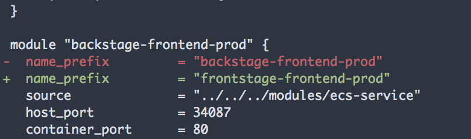
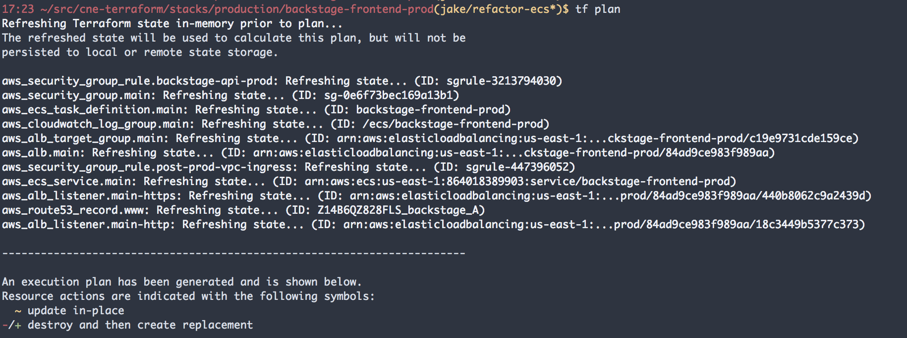
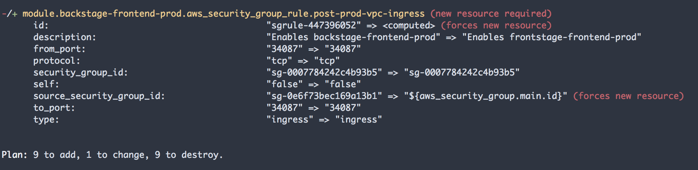

## Working With Terraform * Jake Faris
## Terraform * Infrastructure As Code * Deploys Changes * Reproducible
## Infrastructure As Code * DSL describes each "resource" * Bundled resources packaged into modules * Committed to Github
## Deploys Changes * CLI tracks differences in infra & TF configuration * Change AWS setup right from terminal
## Reproducible * Multiple Stacks can use same Modules * Eg, `ecs-service` module shared by backstage apps
## How Do We Use Terraform at CNE?
* ECS Clusters * ECS Services (Our Applications) * MongoDB
### What does it take to create an ECS Service? * Load Balancers, Target Groups, Security Groups * Task Definitions, Service Definitions * Intricate trail of ports and IPs * It's complicated!!!
## Terraform allows us to document our infrastructure's setup
## Let's take a look ``` // stacks/production/backstage-api-production/main.tf module "backstage-api-prod" { name_prefix = "backstage-api-production" source = "../../../modules/ecs-service" container_port = 8080 host_port = 43942 aname = "backstage-api" health_path = "/healthcheck" ecr_repo = "ecr-backstage-api-production" } ``` ``` // stacks/non-production/backstage-api-staging/main.tf module "backstage-api-staging" { name_prefix = "backstage-api-staging" source = "../../../modules/ecs-service" container_port = 8080 host_port = 39857 aname = "backstage-api-staging" health_path = "/healthcheck" ecr_repo = "ecr-backstage-api-staging" } ```
## Let's take a look ``` // modules/ecs-service resource "aws_security_group" "main" { name_prefix = "${var.name_prefix}-" } resource "aws_alb_target_group" "main" { name = "tg-${var.name_prefix}" port = "${var.host_port}" } resource "aws_route53_record" "www" { name = "${var.aname}" type = "A" } ```
## Making Changes * Ex. Renaming Backstage to Frontstage 
## Making Changes * `terraform apply`


## Current Drawbacks * Repository tracking secrets * Solution: Use Vault * `terraform apply` can be run with non-committed code * Source of truth can be ambiguous if not cautious
## Questions? ## Thank You!